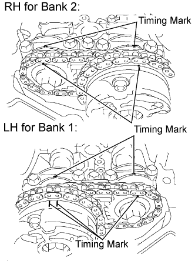
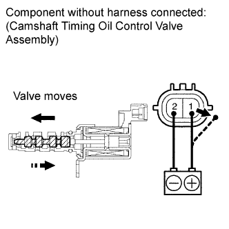

DTC P0016 Crankshaft Position - Camshaft Position Correlation (Bank 1 Sensor A) |
DTC P0018 Crankshaft Position - Camshaft Position Correlation (Bank 2 Sensor A) |
| DTC Code | DTC Detection Condition | Trouble Area |
| P0016 | Deviations in the crankshaft and camshaft position sensor 1 signals (2 trip detection logic). |
|
| P0018 | Deviations in the crankshaft and camshaft position sensor 2 signals (2 trip detection logic). |
| 1.CHECK ANY OTHER DTCS OUTPUT (IN ADDITION TO DTC P0016, P0017, P0018 OR P0019) |
Connect the intelligent tester to the DLC3.
Turn the engine switch on (IG) and turn the tester on.
Enter the following menus: Powertrain / Engine and ECT / DTC.
Read the DTCs.
| Result | Proceed to |
| P0016, P0018 | A |
| P0016, P0018 and other DTCs | B |
|
| ||||
| A | |
| 2.PERFORM ACTIVE TEST USING INTELLIGENT TESTER (OPERATE OCV) |
Connect the intelligent tester to the DLC3.
Start the engine and turn the tester on.
Warm up the engine.
Enter the following menus: Powertrain / Engine and ECT / Active Test / Control the VVT System (Bank 1) or Control the VVT System (Bank 2).
Check the engine speed while operating the camshaft Oil Control Valve (OCV) using the tester.
| Tester Operation | Specified Condition |
| OCV OFF | Normal engine speed |
| OCV ON | Engine idles roughly or stalls (soon after OCV switched from OFF to ON) |
|
| ||||
| OK | |
| 3.ADJUST VALVE TIMING |
 |
Remove the cylinder head cover (for bank 1, Click here, or for bank 2, Click here).
Turn the crankshaft pulley, and align its groove with the timing mark "0" of the timing chain cover.
Check that the timing marks of the camshaft timing gears are aligned with the timing marks of the bearing cap as shown in the illustration.
If not, turn the crankshaft 1 revolution (360°), then align the marks as above.
|
| ||||
| 4.INSPECT CAMSHAFT OIL CONTROL VALVE ASSEMBLY |
 |
Remove the OCV (Click here).
Measure the resistance according to the value(s) in the table below.
| Tester Connection | Condition | Specified Condition |
| 1 - 2 | 20°C (68°F) | 6.9 to 7.9 Ω |
Apply positive battery voltage to terminal 1 and negative battery voltage to terminal 2. Check the valve operation.
|
| ||||
| OK | |
| 5.INSPECT OIL CONTROL VALVE FILTER |
Remove the OCV filter (Click here).
Check that the filter is not clogged.
|
| ||||
| OK | |
| 6.REPLACE CAMSHAFT TIMING GEAR ASSEMBLY |
Replace the camshaft timing gear assembly (Click here).
| NEXT | |
| 7.CONFIRM WHETHER MALFUNCTION HAS BEEN SUCCESSFULLY REPAIRED |
In order to clear the ECM learned values for valve timing, disconnect the cable from the negative (-) battery terminal for 1 minute.
Connect the cable to the negative (-) battery terminal.
Connect the intelligent tester to the DLC3.
Turn the engine switch on (IG) and turn the tester on.
Clear the DTCs (Click here).
Start the engine and idle it for 5 minutes.
Drive the vehicle in an urban area for approximately 10 minutes.
Enter the following menus: Powertrain / Engine and ECT / DTC / Pending.
Read the DTCs.
|
| ||||
| OK | ||
| ||